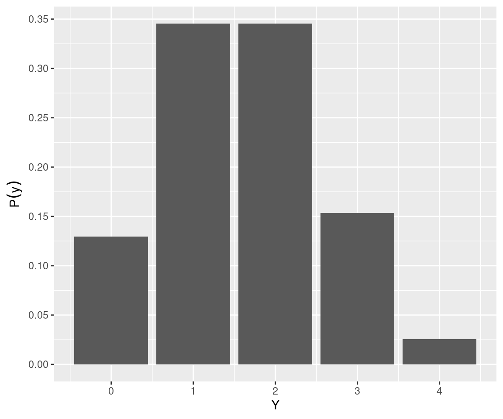
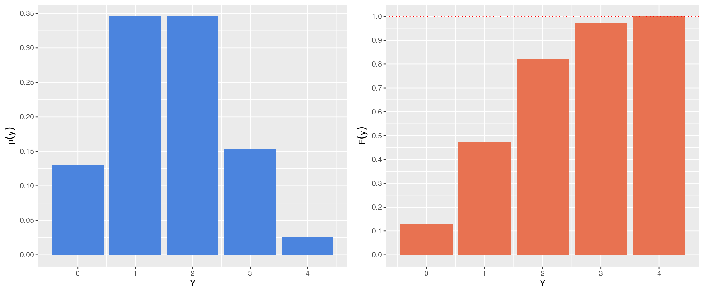
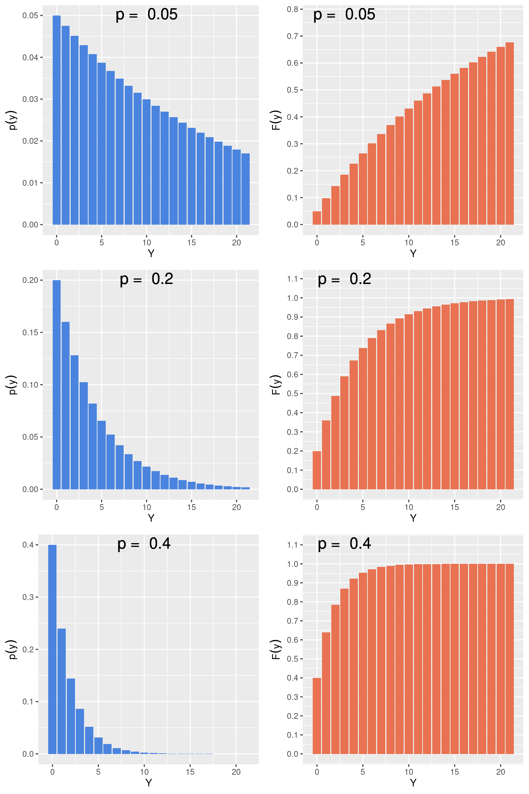
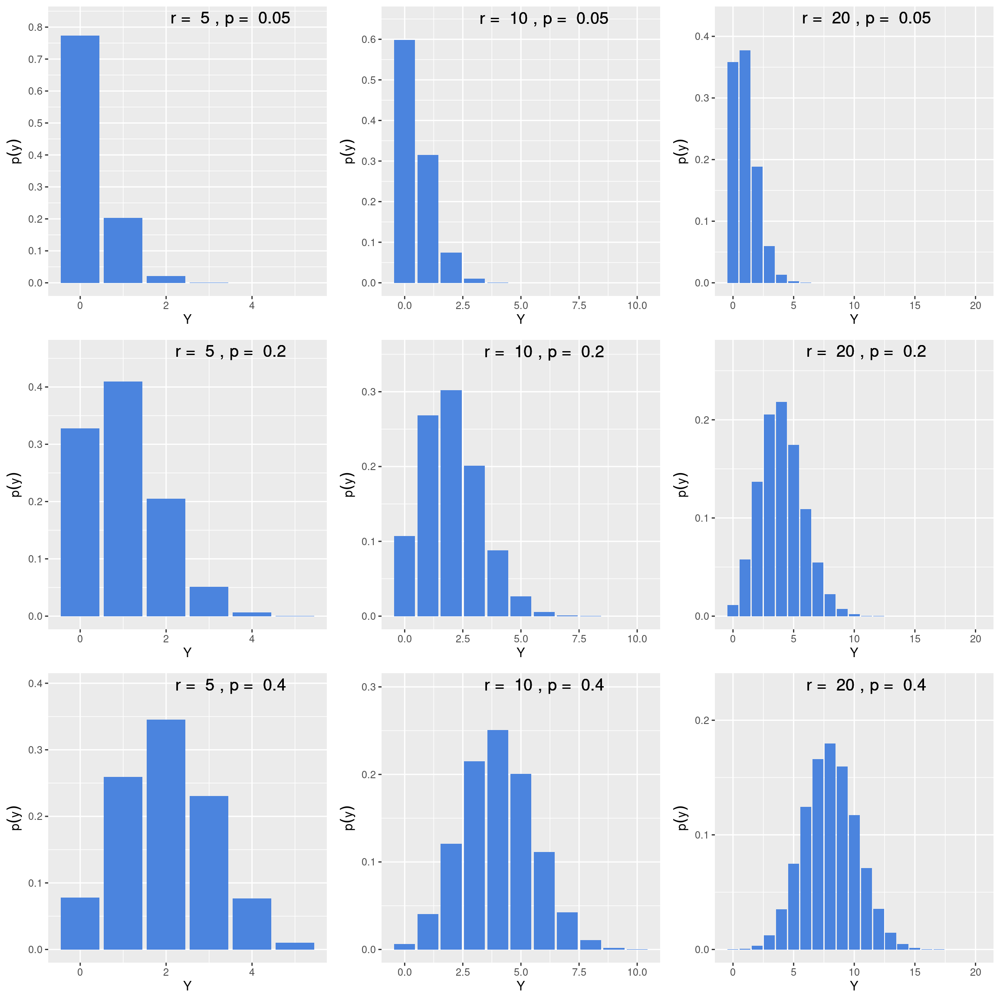

Capítulo 32 As partes estocásticas e determinísticas de um modelo estatístico
32.1 A parcela aleatória
Um modelo estatístico consiste de uma variável aleatória (\(Y\)) modelada a partir de alguns dos modelos probabilísticos vistos nos capítulos 29 e 30. Nestes, a função de probabilidade \(f(Y|\theta)\) é dependente de um ou mais parâmetros. O símbolo \(\theta\) é utilizado para fazer uma representação genérica dos parâmetros de um modelo estatístico. No modelo Binomial por exemplo, os parâmetros são \(n\) e \(p\), no modelo de Poisson é \(\lambda\), no modelo Normal são \(\mu\) e \(\sigma\) e assim por diante.
Definido deste forma, o resultado de um experimento aleatório pode portanto ser entendido como a realização de uma observação de \(Y\) de acordo com um modelo particular.
Por exemplo, no experimento sobre a amostragem de 4 riachos, poderíamos ter como resultado a ocorrência de Rhamdioglanis transfasciatus em exatamente \(3\) riachos. Entendemos esta observação como o resultado de um experimento em que o número de ocorrências segue um modelo Binomial com parâmetros \(n\) e \(p\). O modelo Binomial é portanto o modelo estatístico que descreve a realizações deste tipo de experimento.
Simulando a realização de um modelo estatístico
Vamos utilizar o R para simular uma observação deste tipo de experimento.
n <- 4
p <- 0.4
Y1 <- rbinom(1, size = n, prob = p)
Y1## [1] 2Nos comandos acima fizemos os seguintes passos:
- Definimos os parâmetros \(n\) e \(p\);
- Utilizamos a função ´rbinom´ para simular uma observação ao acaso de acordo com um modelo Binomial com os parâmetros previamente definidos.
- Veja que o parâmetros \(n\) no R é denominado de ´size´, enquanto o parâmetro \(p\) é denomindado de ´prob´;
Note que a cada vez que você rodar os comandos acima irá obter um valor aleatório para Y entre \(0\) e \(4\). Se repetir várias o comando vezes verá que as frequências observadas de cada resultado irão se aproximar das probabilidades preditas pelo modelo Bonimial.
De fato, não é necessario repetir os comandos várias vezes. Basta indicar o número de repetições desejada do experimento. Por exemplo, se quisermos repetí-lo 10 vezes basta fazermos:
n <- 4
p <- 0.4
Y <- rbinom(10, size = n, prob = p)
Y## [1] 3 2 2 3 1 1 1 2 0 3Aumente gradativamente o número de repetições e compare a frequência com que os valores simulados são gerados. Para um número baixo de repetições, haverá maior divergência entre os valores teóricos preditos pelo modelo Binomial e os valores simulados. A medida que o número de repetições aumenta, a distribuição de frequência dos valores simulados irá se assemelhar à distribuição teórica:
n <- 4
p <- 0.4
repeticoes <- 10
# Distribuição teórica
DY <- data.frame(Y = 0:n, Tipo = rep("Teórico", n + 1)) %>%
mutate(PB = dbinom(Y, size = n, prob = p))
# Valores simulados
Y <- rbinom(repeticoes, size = n, prob = p)
Y_sim <- data.frame(FB = prop.table(table(Y)))
Y_sim$FB.Y <- as.numeric(as.character(Y_sim$FB.Y))
# Unificando os data.frames
DY <- Y_sim %>%
rename(Y = FB.Y, PB = FB.Freq) %>%
mutate(Tipo = rep("Simulado", times = nrow(Y_sim))) %>%
select(Y, Tipo, PB) %>%
bind_rows(DY)
ggplot(DY, mapping = aes(x = Y, y = PB, fill = Tipo)) +
geom_bar(stat = 'identity') + #, width=.8, position = "dodge")
facet_wrap(~ Tipo) +
ggtitle("Distribuição de frequência em um experimento Binomial") +
theme(plot.title = element_text(hjust = 0.5)) +
ylab(expression(f(y)))
32.2 A parcela determinística
No exemplo anterior, temos um modelo estatístico descrito unicamente por uma variável aleatória, isto é, um modelo Binomial com \(p = 0,4\). Suponha agora que a ocorrência de Rhmadioglanis transfasciatus varie também como função da elevação do riacho (\(X\)). A espécie é pouco frequente em riachos de baixas altitudes e torna-se mais frequente à medida que a elevação aumenta. Como no exemplo anterior a espécie da espécie deverá ser modelada através de uma distribuição binomial. Entretanto, o parâmetro \(p\) não é mais constante e deverá ser modelado como uma função \(g(X)\) que deverá expressar o aumento na probabilidade de ocorrência conforme a elevação do riacho.
A função \(g(X)\) deverá ser um dos modelos determinísticos vistos no capítulo 31, nos cabendo agora escolher um destes modelos é o mais apropriado para o experimento.
Qual modelo determinístico escolher?
Se assumirmos que \(g(x)\) deverá ser uma função crescente da elevação, poderíamos escolher por exemplo o modelo linear. Neste caso, estaríamos assumindo que o parâmetro \(p\) seria modelado por:
\[g(X) = p = \beta_0 + \beta_1 X\]
b0 <- 0
b1 <- 0.2
df <-data.frame(X = seq(-3, 8, length = 50))
df <- df %>% mutate(Y = b0 + b1 * X)
ggplot(df, mapping = aes(x = X, y = Y)) +
geom_line() +
xlab("Elevação (X)") +
ylab("p") +
geom_abline(intercept = c(0,1), slope = 0, linetype = "dotted")
Veja que este modelo tem uma limitação importante para ser utilizado neste situação. O parâmetro \(p\) por ser uma probabilidade, deve estar restrido ao limites entre \(0\) e \(1\). Entretanto, a função linear é sempre crescente e permite tanto valores negativos quando acima de \(1\) o que não faz sentido para oproblema em questão.
Outros modelos descritos no captítulo 31 seriam mais interessantes, por exemplo, o modelo logístico. Se assumirmos \(g(x)\) como uma função logística da elevação, então \(p\) poderia ser modelado conforme:
\[g(X) = p = \frac{e^{\beta_0 + \beta_1 X}}{1 + e^{\beta_0 + \beta_1 X}}\]
que assume o formato:
b0 <- -10
b1 <- 3
df <-data.frame(X = seq(0, 8, length = 100))
df <- df %>% mutate(Y = exp(b0 + b1 * X) / (1 + exp(b0 + b1 * X)))
ggplot(df, mapping = aes(x = X, y = Y)) +
geom_line() +
xlab("Elevação (X)") +
ylab("p")De fato, a equação logística seria a primeira a ser considerada em uma situação deste tipo, ainda que outros modelos possam ser aplicados. Ao assumir a equação logística, nosso modelo estatístico está completo, em que \(Y\) é uma variável aleatória Binomial (porção aleatória), que tem o parâmetro \(p\) como uma função logística da elevação \(X\) (porção detrminística) e \(n\) é o número de riachos selecionados para um dado valor de elevação.

O modelo estatístico apropriado para prever a ocorrência da espécie em um dado riacho poderia ser escrito como:
\(Y ∼ Binom \left (\begin{array}{c} p = \frac{e^{\beta_0 + \beta_1 X}}{1 + e^{\beta_0 + \beta_1 X}}, n = 1 \end{array}\right)\)
A realização desde modelo nos daria como resposta \(Y = 0\) (a espécie não ocorre) ou \(Y = 1\) (a espécie ocorre). Ao nos referirmos a cada riacho, o parâmetro \(n = 1\) da distribuição binomial transforma este modelo em um experimento de Bernoulli em que a probabilidade de ocorrência \(p\) varia de acordo com a elevação.
32.3 Mais um modelo Binomial: taxa de mortalidade em testes dose-resposta
O nosso próximo exemplo, fala sobre um teste de dose-resposta para o efeito de um poluente sobre um organismo modelo. O teste foi feito em 100 organismos, cada um exposto a diferentes doses do poluente. No gráfico abaixo, cada ponto é um organismo utilizado no teste. O valor em \(X\) nos diz a que nível do poluente o organismo foi exposto e o valor em \(Y\) se houve morte (\(1\)) ou não (\(0\)).
INSERIR GRÁFICO
Para compreendermos como se dá o efeito de \(X\) sobre a mortalidade podemos ajustar uma modelo estatístico. Este modelo deveria nos dizer qual a relação funcional entre a taxa de mortalidade e os níveis de poluente. Como a taxa de mortalidade está restrita entre os valores de \(0\) e \(1\) (i.e. não pode crescer ou decrescer indefinidamente), o modelo linear não seria o mais adequado. Por outro, lado uma relação funcional do tipo logśitica nos daria um modelo mais condizente com o resultado esperado do teste.
Este modelo se inicia com a curva próxima a \(0\). A partir de determinado momento, a curva passa por uma fase de transição e atinge valores próximos a \(1\). Este modelo nos dá portanto a fração esperada de organismos que irão morrer após serem expostos a um determinado nível do poluente. Como esta é uma taxa esperada, o resultado exato irá variar de experimento para experimento e de organismo para organismo. Portanto, falta ainda associar uma estrutura de erro a este modelo.
Neste caso, uma estrutura de erro apropriada seria uma distribuição Binomial de probabilidade com parâmetros \(n\) e \(p\), este último modeloado como uma funçao logística dos npiveis de poluência em \(X\). Assim como o exemplo anterior, este modelo descreve a estrutura de experimentos aleatórios que podem ter como resposta apenas dois resultados (morto/vivo, macho/fêmea, infectado/não infectado).
Seguindo o exemplo anterior, o modelo estatístico apropriado para prever o estado de cada organismo (morto ou vivo) após ser exposto ao poluente poderia ser escrito como:
\(Y ∼ Binom \left (\begin{array}{c} p = \frac{e^{\beta_0 + \beta_1 X}}{1 + e^{\beta_0 + \beta_1 X}}, n = 1 \end{array}\right)\)
Dizemos então que a taxa de mortalidade de cada organismo varia de acordo com um modelo Binomial em que \(p\) segue uma função logística do nível de poluente. Se estivermos falando de cada organismo, o parâmetro na da distribuição binomial é \(n = 1\). Novamente, este seria um experimento de Bernoulli com probabilidade \(p\).
INSERIR GRÁFICO COM AJUSTE
Em experimento deste tipo, um dos principais interesse é saber o nível de poluente em que a probabilidade de sobrevivência é de 50%, ou seja, o valor de \(X\) em que \(p = 0,5\).
32.4 O modelo estatístico da regressão linear
